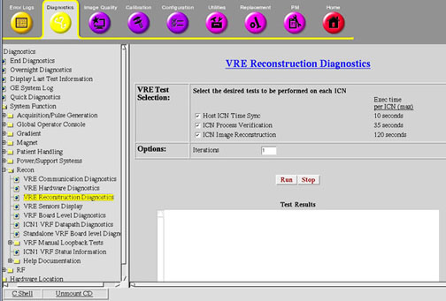

Proprietary to General Electric
Direction 5500113, Rev# 3
Discovery MR750 3.0T Service Methods
Module Version 2.0, Version Date 8/19/08
Proprietary to General Electric |
Diagnostics >> System Function >> Recon >> VRE Reconstruction Diagnostics
Diagnostics >> Hardware Location >> PGR Cabinet >> Recon >> VRE Reconstruction Diagnostics
Illustration 1: VRE Reconstruction Diagnostics

This document describes the VRE Reconstruction Diagnostics including:
Section 5 - This diagnostic tests the time synchronization between the host and ICN. It attempts to execute the date command on the ICN via the remote shell protocol. The ICN and host times are compared to ensure that they meet specifications.
Section 6 - This diagnostic tests the functionally of the ICN’s image reconstruction capabilities. In doing so, each ICN will have its components tested, that is, memory, processors, software and so on. This ensures that each ICN is capable of performing image reconstruction.
This test takes a set of previously collected raw data, and reconstructs the whole set several times, testing image integrity by performing checksums on the images and validating them against saved checksum values.
Section 7 - This diagnostic tests the correct number of processes (like recon, acquisition) is running on an ICN. This diagnostic uses a configuration file that specifies the process name and the number of instances that should be running on the ICN.
Illustration 2: VRE Hardware Communication Block Diagram

The ICNs must be turned on and have a network connection to the Host.
Select Host ICN Time Sync.
Click [Run].
Ensure that each ICN tested passes.
Remote Shell service on the ICN
Host and ICN Time synchronization
Table 1: Diagnostic Results
| Result | Description | GE Field Action |
Passed | The ICN has passed the diagnostic | No further action required |
Failed | The ICN Time Synch Diagnostic has failed |
|
Failed | ICNs are not installed correctly |
|
Ensure that the ICNs are turned on.
Select ICN Image Reconstruction.
Click [Run].
| NOTE: | Once you click [Run], do not click anywhere else in the Common Service Desktop until the test is completed. If you need to abort the test, you must click [Stop]. |
ICN hardware
ICN software
Software communication between ICNs
Table 2: Diagnostic Results
| Result | Description | GE Field Action |
Passed | The ICN has passed the diagnostic | No further action required |
Failed | The ICN Reconstruction diagnostic has failed Reconstruction took too long |
|
Select ICN Process Verification.
Click [Run].
Ensure that each ICN passes.
Processes running on the ICN
Table 3: Diagnostic Results
| Result | Description | GE Field Action |
Passed | No further action required | |
Failed | The ICN has failed the diagnostic |
|